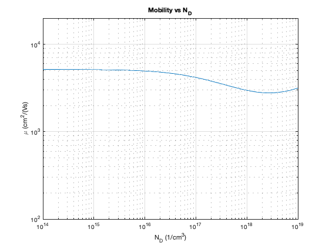

clc;
clear variables;
close all;
hbar=6.582119*10^-16;
hbarJ=1.0545718*10^-34;
kb=8.6173303*10^-5;
kbJ=1.38064852*10^-23;
T=300;
ep0=8.854187817*10^-12;
e=1.6021766208*10^-19;
m0=9.10938356*10^-31;
Ec=0;
effm = 0.067*m0;
rho = 5.36/1000*(100^3);
vs = 5.24*10^5/100;
epr0 = 12.90;
eprInf = 10.92;
nE=50;
E=linspace(0.000001,2,nE);
Dac = 7.01;
E0 = 0.03536;
w0 = E0/hbar;
N0=(exp(E0/(kb*T))-1)^(-1);
dNI = 100;
NI = logspace(20,25,dNI);
Z = 1;
GammaMAcoustic(1:nE)=0;
GammaMIonImp(1:nE,1:length(NI))=0;
GammaPop(1:nE)=0;
GammaTot(1:nE,1:length(NI))=0;
k(1:nE)=0;
for i=1:nE
k(i) = sqrt(2*effm*E(i)/(hbar*hbarJ));
g3dAcoustic = sqrt(2)/(pi^2*hbar^3)*effm^(3/2)*sqrt(E(i)-Ec);
GammaMAcoustic(i) = 2*pi/(hbarJ*hbar)^(1/2)*Dac^2*kb*T/(2*rho*vs^2)*g3dAcoustic;
PopFactor=sqrt(hbar/hbarJ)*e^2*w0/(8*pi)*sqrt(2*effm(1)/hbarJ^2)*(1/(ep0*eprInf)-1/(ep0*epr0))*1/sqrt(E(i));
ScattPolarOpAbs = PopFactor*N0*log(abs((1+sqrt(1+E0/E(i)))/(-1+sqrt(1+E0/E(i)))));
ScattPolarOpEmi = PopFactor*(N0+1)*log(abs((1+sqrt(1-E0/E(i)))/(1-sqrt(1-E0/E(i)))))*heaviside(E(i)-E0);
GammaPop(i) = ScattPolarOpAbs + ScattPolarOpEmi;
for m=1:length(NI)
Ld=sqrt(ep0*eprInf*kbJ*T/(e^2*NI(m)));
gamma=sqrt(8*effm*E(i)*Ld^2/(hbar*hbarJ));
GammaMIonImp(i,m)=(hbar/hbarJ)^(3/2)*(NI(m)*e^4)/(16*sqrt(2*effm(1))*pi*eprInf^2*ep0^2)*(log(1+gamma^2)-gamma^2/(1+gamma^2))*E(i)^(-3/2);
GammaTot(i,m) = GammaMAcoustic(i)+GammaMIonImp(i,m)+GammaPop(i);
end
end
g0(1:nE,1:length(NI))=0;
v(:) = hbarJ*k(:)/effm;
for i=1:nE
g0(i,:) = e.*v(i).*(-1/(kbJ*T))*exp(-E(i)/(kb*T))./GammaTot(i,:);
end
g=g0;
Ipop(1:length(k),1:length(NI))=0;
threshold=1e-7;
ksi1 = sqrt(1-E0./E);
ksi2 = sqrt(1+E0./E);
for m=1:length(NI)
for i=2:nE-1
deltag=1;
while deltag>threshold
gammaksi1 = g(i-1,m)*(-1+(2+ksi1(i)^2)/(2*ksi1(i))*log(abs((1+ksi1(i))/(1-ksi1(i)))));
gammaksi2 = g(i+1,m)*(-1+(2+ksi2(i)^2)/(2*ksi2(i))*log(abs((1+ksi2(i))/(1-ksi2(i)))));
Ipop(i,m)=(e^2*(w0*e)*effm)/(4*pi*ep0*hbarJ^2*k(i))*(1/eprInf-1/epr0)*(N0*heaviside(ksi1(i)^2)*gammaksi1+(N0+1)*gammaksi2);
if E(i)>E0
gtemp = g(i,m);
g(i,m)=gtemp + Ipop(i,m)/GammaTot(i,m);
deltag = abs(g(i,m)-gtemp);
end
end
end
end
mobility(1:length(NI))=0;
for m=1:length(NI)
top=0;
bottom=0;
for i=1:nE
top=top+e*E(i)*g(i,m);
bottom=bottom+exp(-E(i)/(kb*T))*sqrt(e*E(i));
mobility(m)=-sqrt(2/effm)*top/(3*bottom);
end
end
figure(1)
loglog(NI/(100)^3,mobility*100^2)
grid on
title('Mobility vs N_D')
xlabel('N_D (1/cm^{3})')
ylabel('\mu (cm^{2}/(Vs)')
axis([1e14 1e19 1e2 2e4])
